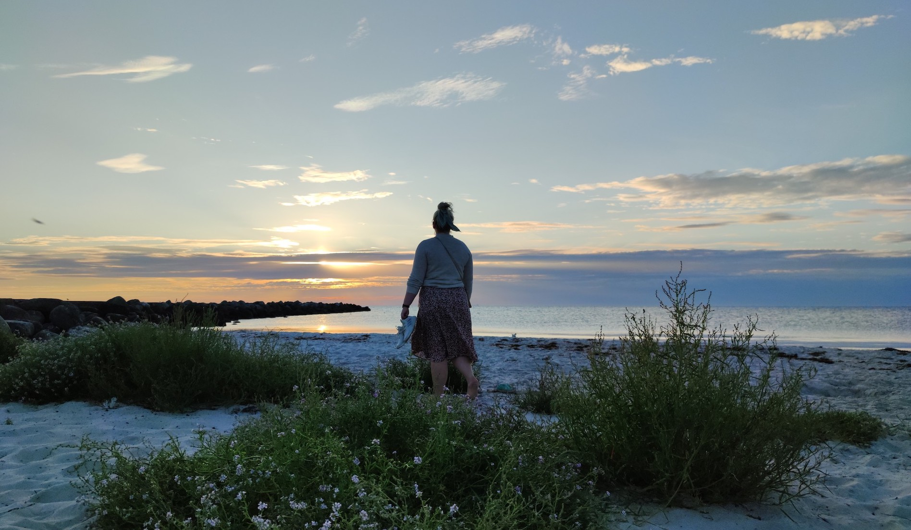
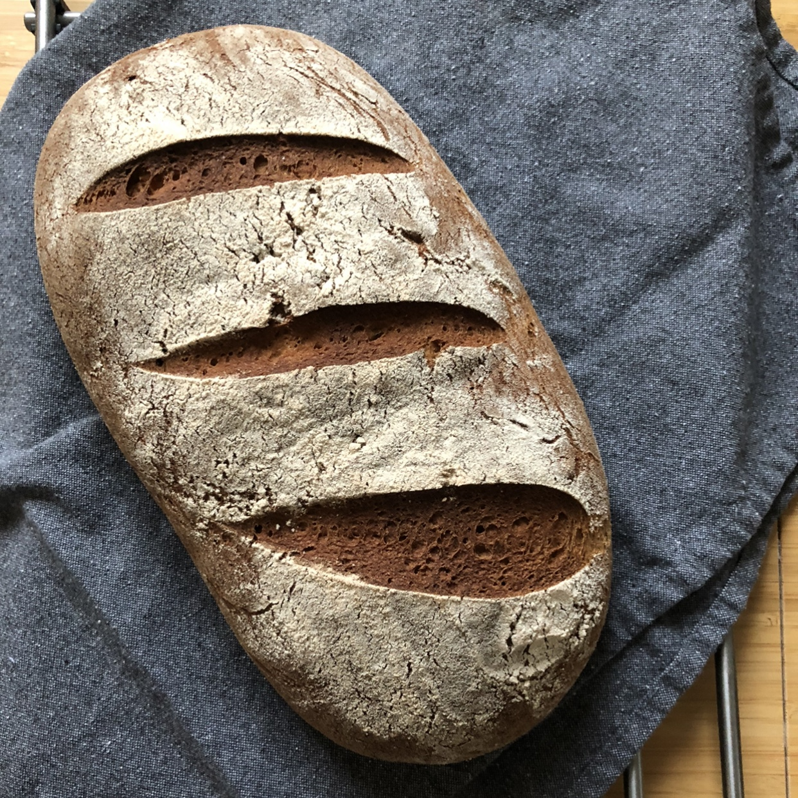
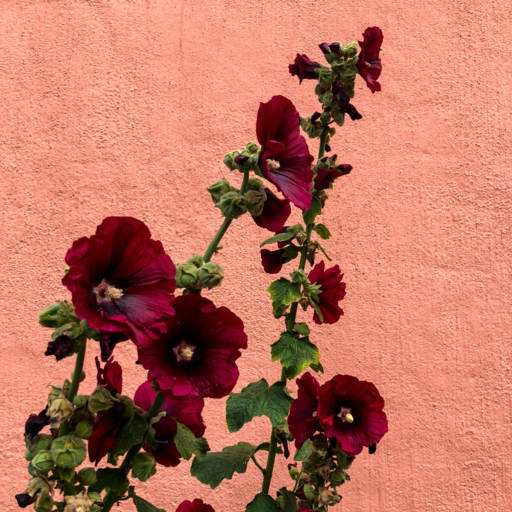
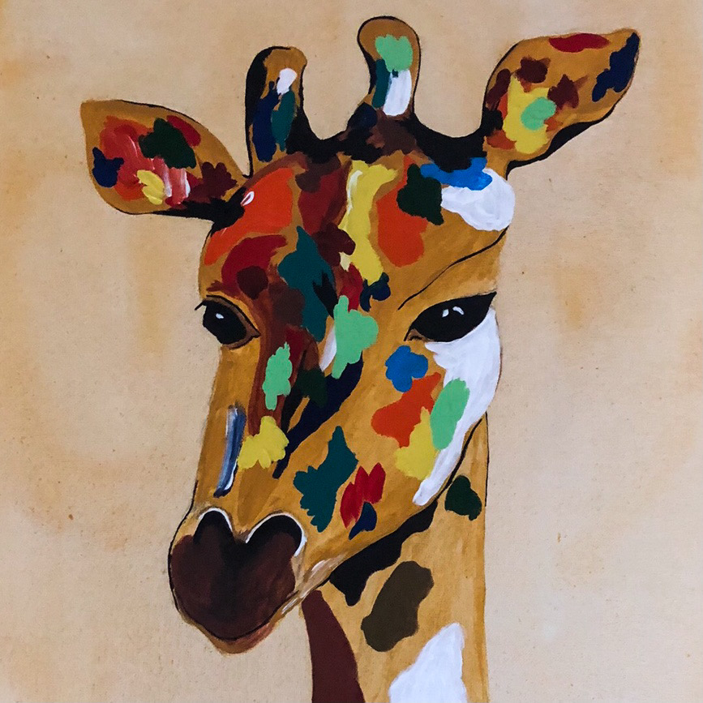
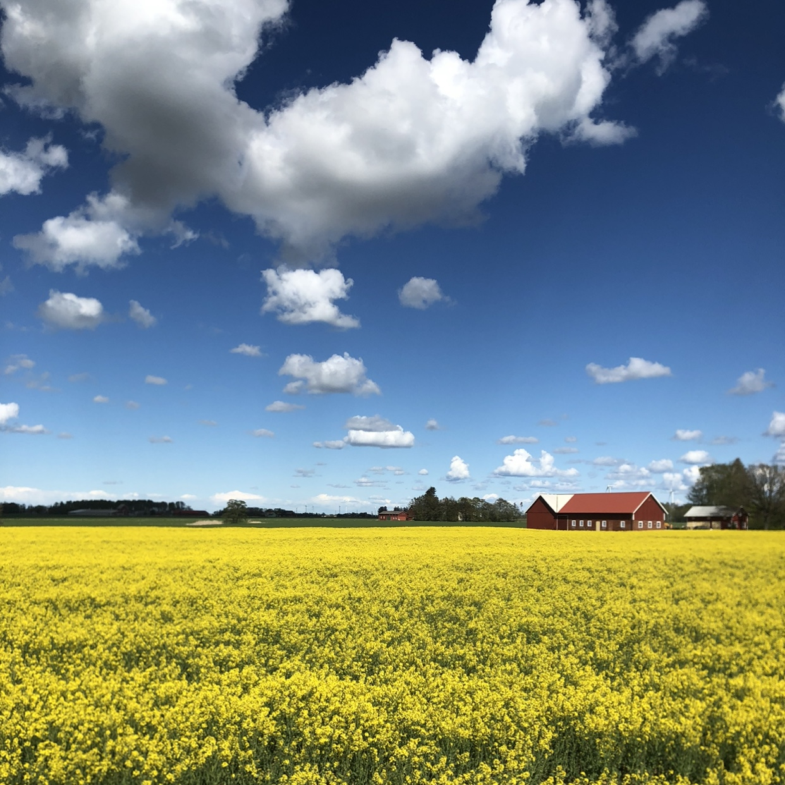

OM MIG
Hej, jag heter Malin Wedin och är en Göteborgsbaserad tjej på 30 år.
Efter 10 år med nya destinationer varje dag så var det dags för något annat.
Nu studerar jag Front end developer på Medieinstitutet och kämpar på för att förstå kodens värld.
INTRESSEN
Baka bröd.
Växter och blommor.
Måla är något jag gjort länge. Men tyvärr är det något som ofta prioriteras bort då tiden inte alltid räcker till.
Fotograferar gärna allt och lite till. Vackra landskap går ju inte att låta bli.




KONTAKT
Vill du ha kontakt med mig så skicka iväg ett mail
malin.wedinbackman@medieinstitutet.se